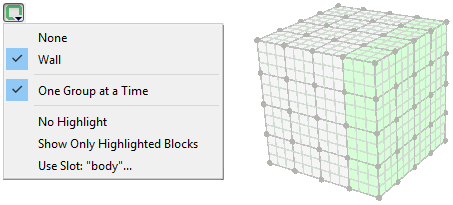
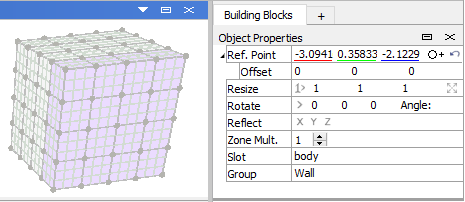
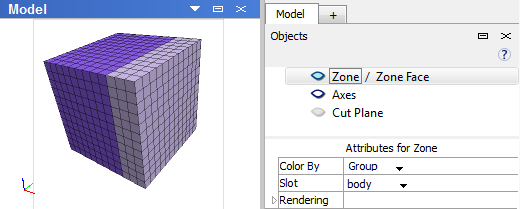

高亮显示分组
高亮分组工具按钮（ ）包含以绿色高亮显示点、棱边、面和块体的命令。它还有一个命令，用于显示指定分组中的所有块体，且仅显示这些块体。
）包含以绿色高亮显示点、棱边、面和块体的命令。它还有一个命令，用于显示指定分组中的所有块体，且仅显示这些块体。
当您为任何对象指定分组名称后，该名称会出现在高亮分组按钮的菜单中。当您在菜单中该名称旁放置复选标记时，指定了该分组的对象将显示为绿色。
菜单中始终有一个名为“无”的菜单项。勾选该项后，所有未指定分组的对象将以绿色高亮显示。
“每次一个分组”菜单项被勾选时，一次只允许高亮显示一个分组。未勾选时，可以同时高亮显示多个分组。
“无高亮”命令将取消勾选所有分组名称，并移除所有对象的绿色高亮显示。
“仅显示高亮显示的块体”将隐藏所有不在高亮分组中的块体，并显示所有在高亮分组中的块体。然后它会高亮显示所有可见块体。


指定分组名称
要指定分组名称，请先选中一些对象，然后在对象属性控件组中输入分组名称。下图中添加了名称“Wall”。


您可以先在分组名称上方的行中输入槽位名称，然后输入分组名称，以此指定分组被指定到的槽位。
在模型窗格中查看分组
为对象指定分组时，该分组会被指定到某个槽位中，默认槽位为“body”。该槽位中的所有分组都会显示在高亮分组菜单中。该槽位可在模型窗格的对象控件组中使用，以按块体分组名称显示网格单元。


| 这些内容对您有帮助吗？… | FLAC3D © 2019, Itasca | 原文更新于 2020 年 10 月 8 日 |
| 版权与免责声明 | ||